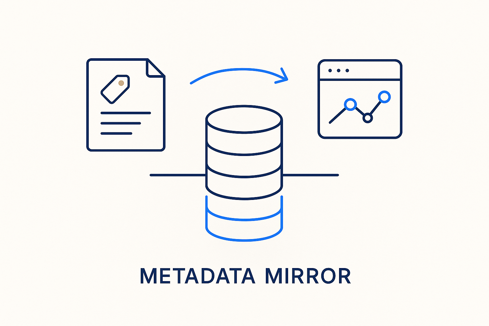

The metadata files, read into a fast database (like DuckDB) as a queryable mirror — files stay the source of truth, the database is the reflection that apps and queries run against.

> The metadata files, read into a fast database (like DuckDB) as a queryable mirror — files stay the source of truth, the database is the reflection that apps and queries run against.
Once the knowledge is captured as metadata files, you need to be able to *query* it at speed — and markdown-in-folders isn’t a query engine. The metadata mirror solves this: the files are read into a fast analytical database, typically DuckDB, that reflects their content. The crucial rule is directionality — files stay the source of truth, the database is the mirror. You never edit the database directly; you edit the files (in git, reviewable) and regenerate the reflection. That keeps the human-editable curation layer authoritative while giving everything downstream a fast, structured surface to run against.
The mirror is what makes the brain usable. Apps read from it, MCP servers query it, analysts join across it — all at database speed, all from a reflection that was generated, not hand-maintained. Because it’s regenerated from files, it can never silently drift: if the mirror is wrong, the files are wrong, and the files are where you fix it.
This is the pattern the whole ecosystem uses (concepts, the metadata model, the demo browser): metadata as files = truth, DuckDB as the queryable spiegel. Structure once, reflect fast, query everything.
Where it lives: the metadata OS — files as truth, a fast database as the queryable reflection.